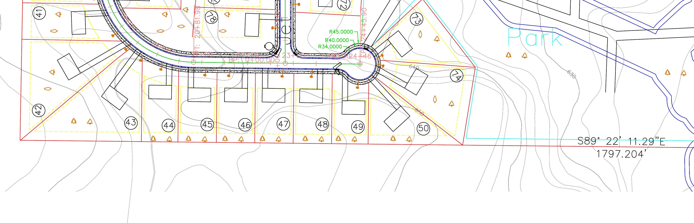
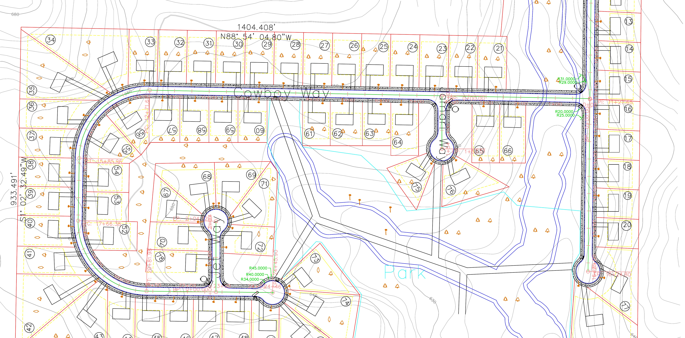
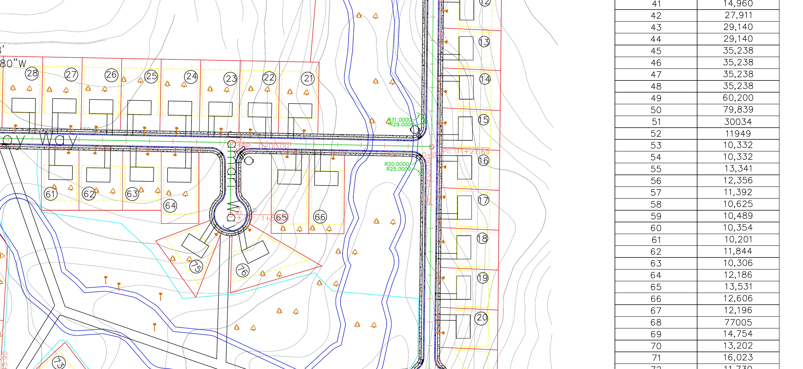
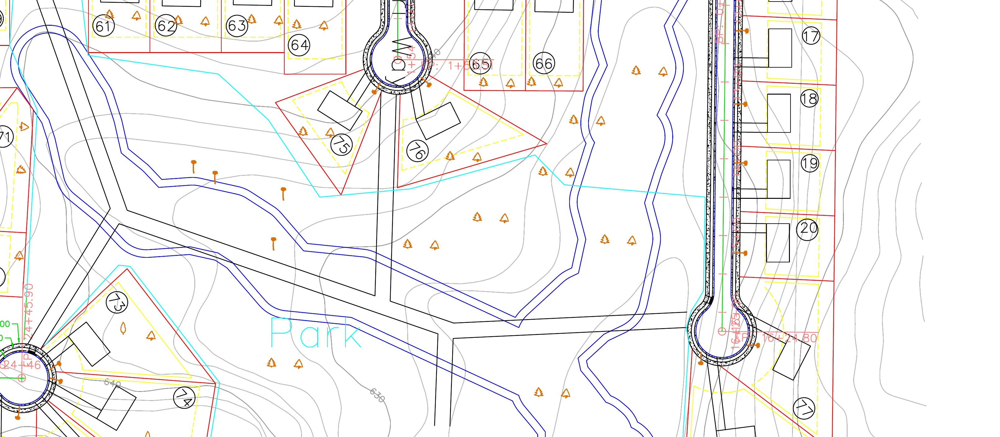

OVERALL DEVELOPMENT PLAN
Complete Subdivision Layout

RESIDENTIAL LOT LAYOUT
Lot Configuration & Setbacks
- 77 residential lots (10,000 sq. ft. min.)
- 50' × 30' typical building footprints
- 120' minimum lot depth
- 30' front, 5' side, 20' rear setbacks

ROADWAY NETWORK
Internal Streets & Cul-de-Sacs
- Interconnected local street network
- Multiple cul-de-sacs
- Horizontal roadway curves
- Curb and gutter infrastructure

TOPOGRAPHY + DRAINAGE
Contours & Drainage Corridor
- Existing topography integration
- Drainage corridor through site
- Roadway placement based on terrain
- Culvert crossings (per county criteria)

PARK + OPEN SPACE
Recreational Area & Green Space
- Central park and open space area
- Integrated with natural drainage
- Supports neighborhood connectivity
- Preserves key site features
Project Overview
This academic land development project designed a 77 lot residential subdivision across an approximately 85 acre site, with 48 acres within the development boundary. The layout coordinates roadway circulation, lot configuration, topography, drainage corridors, and open space as an interconnected system, with all lots receiving internal street access rather than direct access to Chipper Jones Boulevard.
Project Information
| Location | Chipper Jones Boulevard (Mecklenburg County, NC) |
| Total Site Area | ~85 Acres |
| Development Area | ~48 Acres |
| Total Lots | 77 Lots |
| Zoning | R-4 (Residential) |
| Minimum Lot Size | 10,000 sq. ft. |
| Typical Home Footprint | 50' × 30' |
| Minimum Lot Depth | 120' |
| Setbacks | Front: 30' | Side: 5' | Rear: 20' |
| Floodplain | Outside FEMA Floodzone |
| Access | Internal Streets Only |
| Project Type | Academic – Land Development |
- Topography and elevation changes
- Drainage corridor and open space
- Mecklenburg County land development criteria
- Roadway geometry and vertical profiles
- Cul-de-sacs, curb and gutter, and culverts
- Lot configuration and building envelopes
The design balances 77 residential lots with topography, drainage, and open space constraints by coordinating roadway alignment, lot geometry, grading, and drainage conveyance as an integrated system. Station based profiles (approx. 1,800–2,000 ft) were used to evaluate horizontal and vertical conditions together, resulting in a functional and connected residential development.
- 77-lot residential subdivision
- ~85 acre site (~48 acre development)
- Fully internal street access
- Integrated park and open space
- Designed around topography and drainage
- Applied county land development standards